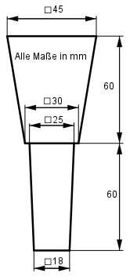

Aufgabe 272 Wie groß ist die Masse m des Verbindungsteils, wenn seine Dichte 7,85 g/cm3 beträgt?

Volumen V = Pyramidenstumpf1 + Pyramidenstumpf2 V1 = mm3 V1 = mmm3 V1 = 20 * (625 + 25 * 18 + 324) mm3 V1 = 27 980 mm3 = 27,98 cm3 V2 = mm3 V2 = 20 * (900 + 30 * 45 + 2 025) mm3 V2 = 85 500 mm3 = 85,5 cm3 m = (V1 + V2) * р = = (27,98 cm3 + 85,5 cm3) * 7,85 g/cm3 = 891 g